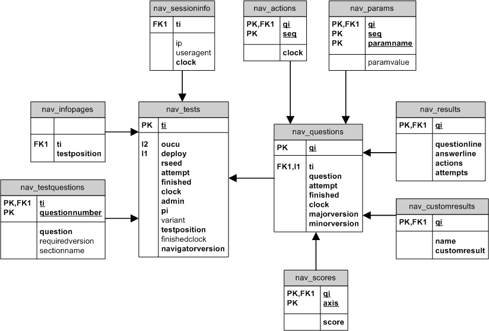

The OpenMark database stores progress and results for all users.
SQL commands to create the database are in createdb.sql in the appropriate om.tnavigator.db.dbtype package.
Each user attempting a test gets a test instance ID - ti - which refers to that test attempt. (Supposing they are permitted to attempt the same test more than once, they will get a second, different ti.)
Each question attempt that a user begins is assigned a question instance ID - qi - which refers to that particular attempt at that particular question. Again, these numbers are unique and a second attempt at a question, if permitted, will result in a second qi.
When users attempt a question, they go through a series of actions which correspond to HTTP form posts (i.e. one action for each time they click a button on the question). Each action is assigned a seq (sequence) within that question instance.
A question ID is a unique ID for a particular question within the question bank (e.g. s151.chapter03.question01). Questions have major and minor version numbers.
All information is stored for users on all tests (even non-assessed ones), the only exception being single questions - the sort that appear within an iframe on some other website - which are not stored anywhere.
The information is used:

Includes one line for each user's attempt at a test (test instance).
The random number seed is important. That same rseed, plus the question attempt number for a given question (usually 1 if it's the first try), is given as the initial random number seed to a question. It is vital when reproducing results of a question.
The 'finishedclock' field was added later and, to reduce change risk, does not replace the finished field even though it duplicates that information (i.e. we could use the 'finishedclock IS NULL' compare instead of finished=0). At some later date it would be good to get rid of the finished field but this requires careful consideration.
For each test instance, lists all the questions that a user was given, along with other information from the test file - the required major version, and the name of the section it's in. Used when calculating results and in displaying the answer summaries etc.
Note: the seq field currently shares name with another field. I will be renaming this one shortly.
The info pages table lists info pages that users have already seen. It's only needed so that we can draw them purple when people resume the test. For questions, we don't need to store this individually because we can use nav_questions to determine whether each question was finished.
Each line added to this table represents an info page that somebody has seen. If it's in here, they've seen it.
In a given test instance, there is one question instance for each question that a user takes. If the user takes a question more than once (only usually permitted in practice tests) there will be multiple rows in this table with the same question ID, but they will have different qi numbers.
The system stores major and minor version of the question in use to be certain that actions are still relevant. For example, if a user starts a question when the latest version is 1.4, but somebody then uploads 1.5, the user's test will continue using 1.4 unless they restart the question (for tests which allow questions to be indefinitely restarted, i.e. practice tests rather than assessed ones).
This ensures that progress through the question is compatible. Otherwise, if the action format changes slightly between versions, the system could encounter errors when it attempted to replay existing progress through the question.
Possible values for finished:
The distinction between 1 and 2 is that 1 means the question returned some results (which usually happens before the question 'exits', as it tends to display a page of information too), whereas 2 means the question was completed totally (i.e. they clicked the button to finish on that final information page). Generally, anything other than 0 means finished.
For each question attempt, we store each action the user takes, i.e. each time they click on a button to post a form to the server. Basically it stores all the form parameters. This can be used to replay a question if necessary.
This doesn't actually store the parameters that went with a single action, because those are in nav_params.
Note: seq here is not the same as seq in nav_testquestions, so don't try joining on them (I'm not sure why you would but still). Sorry! I missed that one when tidying out the database. Will tidy again soon.
There may be any number of parameters for each action.
Results are entered when a question is completed, or by the time in the question when we've already told them the answer. There is only ever one nav_results entry per question instance (or none at all).
Each question can return integer scores on multiple axes, which have IDs. Consequently there might be zero, one, or more entries in this table per question instance.
Note that the maximum available score on each axis for a question is not included in the database, but is obtained as part of the question metadata. This is sort of questionable. Arguably, it ought to be recorded here too so that scores can be reconstructed without needing to go back and ask individual questions for their metadata.
A few questions may return 'custom results' for processing by some other system (e.g. extract from our database and dispatch the text to tutors).
The system writes to this table only if questions actually have custom results, and never reads it.
This table is used only for logging. It stores information about each user test session, written when their session begins.
At present, nothing is ever automatically deleted from this database. Should it become necessary to delete data, care would need to be taken not to delete data that should still be retained - assessed test data must be kept for at least a year, I have heard.